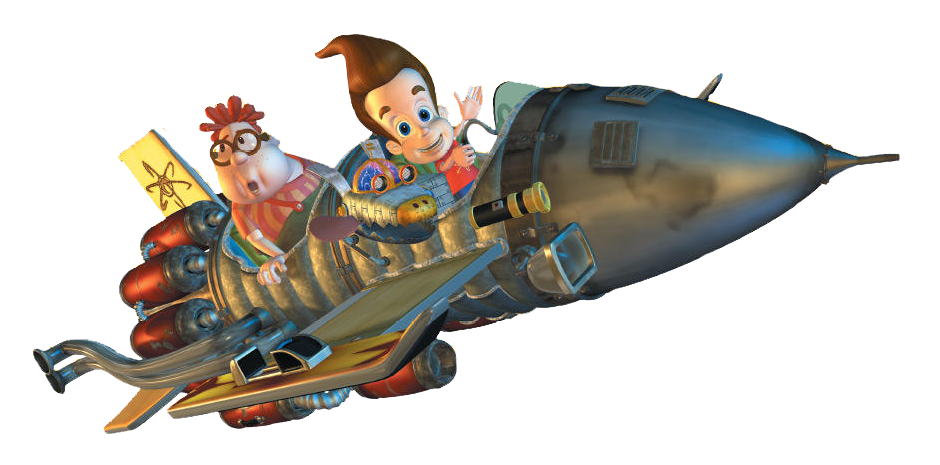

Главным увлечением Джимми являются его изобретения
Изобретения Джимми включают его любимую механическую собаку, Годдарда с множеством функций, машину времени и наноботов. У него есть несколько десен и изобретений на основе конфет, которые включают в себя: Нейтронную воздушную резинку, которая позволяет людям дышать под водой, резинку, которая позволяет запоминать книги, и конфету, которая удовлетворяет все вкусовые рецепторы языка. После употребления таких конфет у человека развивается физиологическая потребность (зависимость) к ним.
Он также сделал изобретения, чтобы помочь ему с транспортом, наиболее часто используемыми были его летающая ракета и его судно на воздушной подушке. У него также есть игровая пирамида, которая позволяет игрокам фактически войти внутрь своей любимой видеоигры, следуя за ней с помощью клонирующей машины. В видеоиграх он делает несколько изобретений, похожих на серию. Он часто создает различные типы продвинутых космических кораблей с автобусами и велосипедами, может использовать аттракционы для создания некоторых, и заканчивает со своим любимым, парящим автомобилем, который он использует чаще всего. Он создает эти изобретения в обширной лаборатории, расположенной под его клубом, которая остается доступной только ему одному с помощью сканирования ДНК.Иногда намекают, что Джимми, возможно, получил свой суперинтеллект от матери. Один из примеров этого происходит в "See Jimmy Run", где она научно/правильно указывает на недостаток в быстрых кроссовках Джимми, который он не учел. Другой пример имеет место в Maternotron Knows Best, где она впечатляет Джимми, вытаскивая высокоразвитый молекулярный взрывной луч из своего подсобного шкафа, чтобы выключить Maternotron. Она также поместила следящее устройство в кожу Хью, показанное в "Aaahh!! Дикая местность!!" - чтобы убедиться , что он останется в безопасности. Кроме того, Джуди - семейный механик. Ее часто можно найти в гараже, проверяя пробки и точки или добавляя лошадиные силы к семейному родстеру.
Его последнее изобретение-ракетный корабль , сделанный только для одного, как показано в пилоте для планеты Шин, который Шин крадет и аварийно приземляется на другой планете.